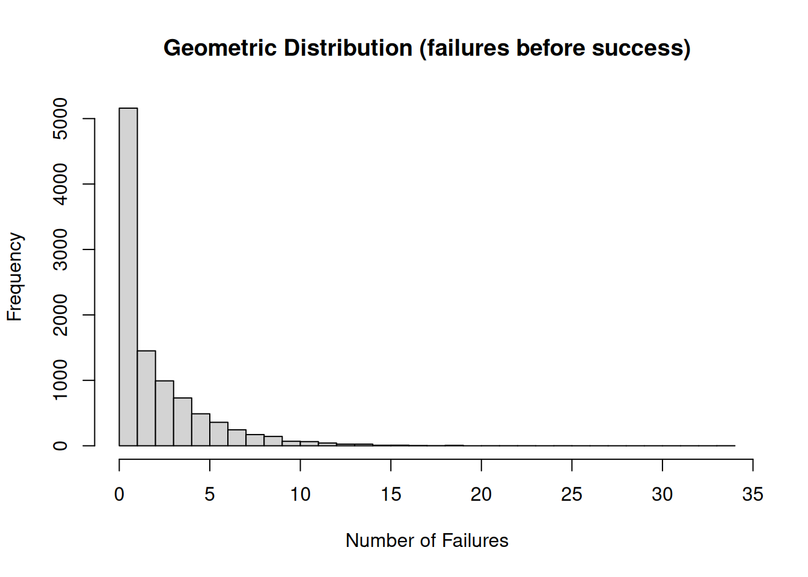
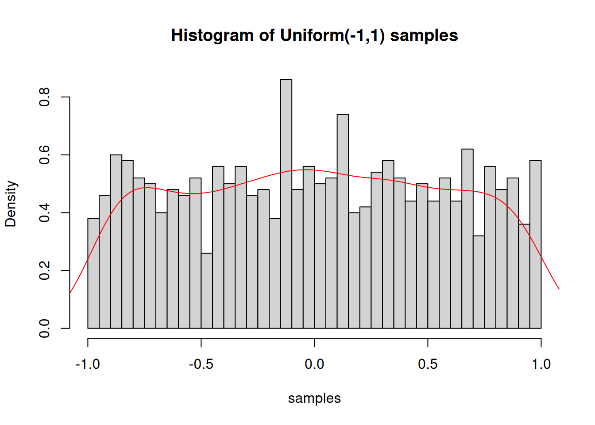
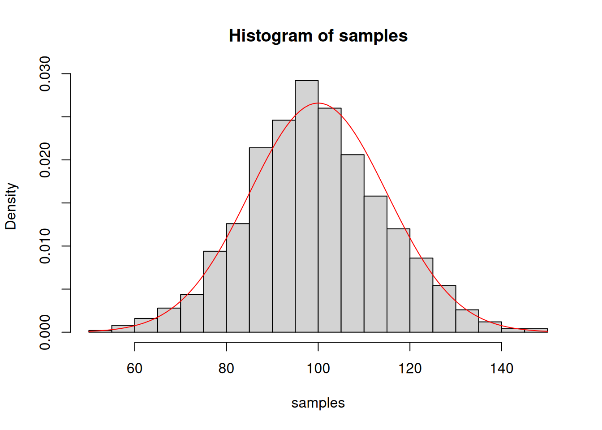
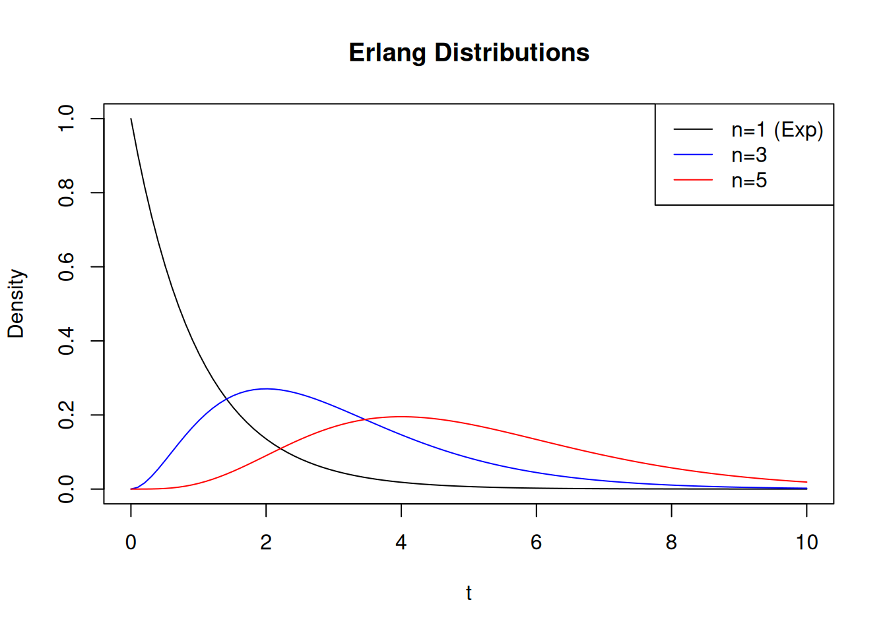
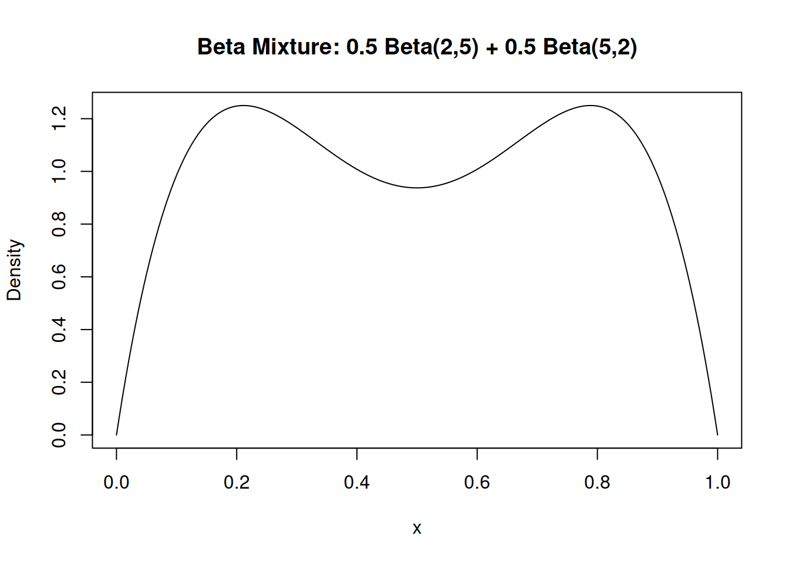

13The Typical Animals Encountered in the Statistical Zoo
This section reviews the most common probability distributions encountered in statistical inference. For each distribution we give the probability law, the main parameters, and a short interpretation. These distributions will reappear frequently as likelihoods, priors, or posteriors in Bayesian analysis.
It is useful to recall the meaning of Bernoulli trial, as it will appear many time in the following. It is a random experiment with exactly two possible outcomes, “success” and “failure”, in which the probability of success \(p\), thus of failure \(q=1-p\), are the same every time the experiment is conducted.
13.1 Standard discrete distributions
Discrete distributions describe random variables taking values in \(\mathbb{N}\) or finite subsets thereof.
13.1.1 Binomial (and multinomial) distribution
The binomial distribution gives the probability of observing \(x\) successes in \(n\) independent Bernoulli trials, each with success probability \(p\):
Implementation in R
# Probability mass function: P(X = k)dbinom(3, size =10, prob =0.4) # P(X=3) with n=10, p=0.4
\[
P(X=x)=\binom{n}{x} p^{x}(1-p)^{n-x}, \quad x=0,1, \ldots, n . \tag{13}
\]
The binomial coefficient \(\binom{n}{x}=\frac{n!}{x!(n-x)!}\) counts the ways to choose an unordered subset of \(k\) elements from a fixed set of \(n\) distinct elements.
The case of a single trial \(n=1\) defines the Bernoulli distribution.
Example. Draws without replacement
In a restaurant 8 entrees of fish, 12 of beef and 10 of poultry are served. What is the probability that 2 of the 4 next customers order fish entrees?
There are \(12+8+20=30\) total entrees served. We assume that all dishes can be served an unlimited number of times. So the probability that a random customer orders fish is \(8 / 30=4 / 15\). Then, the number of fish orders among 4 customers is \(X \sim \operatorname{Binomial}(n=2, p=4 / 15)\). Therefore,
The multinomial distribution generalizes this setting to \(k\) possible outcomes with probabilities \(\left\{p_{i}\right\}_{i=1}^{k}\), describing the joint distribution of the counts \(\left(x_{1}, \ldots, x_{k}\right)\) with \(\sum_{i} x_{i}=n\). Its probability mass function reads
The geometric distribution gives the probability that \(n\) Bernoulli trials are needed to obtain the first success:
Implementation in R
# Note: R uses number of failures BEFORE first success!# So P(N_fail = k) = (1-p)^k * p# P(first success at trial 5)dgeom(4, prob =0.3) # 4 failures before 1st success
# Mean and variancemean_geom <-function(p) 1/pvar_geom <-function(p) (1-p)/p^2cat("Geometric(p=0.3): Mean =", mean_geom(0.3), "Variance =", var_geom(0.3), "\n")
Geometric(p=0.3): Mean = 3.333333 Variance = 7.777778
# Sampling waiting timesrgeom(1000, prob =0.3) # Number of failures before success
hist(rgeom(10000, prob =0.3), breaks =30,main ="Geometric Distribution (failures before success)",xlab ="Number of Failures")

\[
P(N=n)=(1-p)^{n-1} p \tag{16}
\]
It follows easily from the observation that the probability to succeed at the \(n\)-th trial is given by the probability of failing \(n-1\) times, \((1-p)^{n-1}\), times the probability of success, \(p\).
The geometric distribution has mean \(\mathbb{E}[N]=1 / p\) and its variance is \(\sigma^{2}=(1-p) / p^{2}\).
Additionally, it is memoryless,
\[
P(N>n+m \mid N>n)=P(N>m)
\]
meaning that the probability of waiting an additional \(m\) trials for success does not depend on how many trials have already occurred. To show that we compute the conditional probability
We note that in the rare-event limit in which \(p \rightarrow 0\), we have that the variance diverges as \(\sigma^{2} \rightarrow 1 / p^{2}\). Namely, rare moments might happen at any moment, even though they have a negligible probability to happen at any moment.
13.1.3 Negative binomial distribution (or Pascal distribution)
The negative binomial distribution gives the probability of observing \(k\) failures before the \(r\)-th success in independent Bernoulli trials:
It generalizes the geometric distribution, which is recovered for \(r=1\).
13.1.4 Hypergeometric distribution
The hypergeometric distribution describes the probability of obtaining exactly \(k\) successes in \(n\) draws without replacement from a finite population of size \(N\) containing \(K\) successes:
Implementation in R
# Example: Urn with 40 white and 60 black balls (100 total)# Draw 20 balls. Probability that at least 50 black balls remain?# (i.e., at most 10 black balls drawn)N <-100# Total ballsK <-60# Black balls (successes)n <-20# Draws# P(X <= 10) where X ~ Hypergeometric(N=100, K=60, n=20)prob <-phyper(10, m = K, n = N - K, k = n)cat("P(at most 10 black balls drawn) =", prob, "\n")
This expression follows from counting the number of ways of choosing \(k\) successful items among the \(K\) available and \(n-k\) unsuccessful items among the remaining \(N-K\), divided by the total number of possible samples of size \(n\).
In practice, the hypergeometric distribution generalizes Bernoulli trials to sampling without replacement, where the success probability is history-dependent. This is why it is expressed combinatorially rather than in terms of a fixed \(p\).
Example. Two-color urn problem
An urn contains 40 white balls and 60 black balls. If you draw 20 balls at random without replacement, what is the probability that at list 50 black balls remain in the urn at the end?
The total number of balls is \(N=100\). Let \(X\) be the random number of black balls drawn in the \(n=20\) draws. Since we want at least 50 black balls remaining in the urn, \(60-X \geq 50\), that is \(X \leq 10\). Since the draws are without replacement, \(X\) follows a hypergeometric distribution
The Poisson distribution arises as a limit of the binomial distribution for rare events. We take the rare-event limit of (13), i.e. trials are many and success probability is small. Namely, we define the limit
\[
n \rightarrow \infty, \quad p_{n} \rightarrow 0, \quad n p_{n} \rightarrow \lambda>0
\]
where \(\lambda\) is kept fixed. For fixed \(k\) and large \(n\), we rewrite the binomial coefficient as
since \((1-\lambda / n)^{n} \rightarrow e^{-\lambda}\) and \(\left(1-p_{n}\right)^{-k} \rightarrow 1\) for fixed \(k\). Putting everything together, we find
Thus, in the rare-event limit the binomial distribution converges to the Poisson distribution with parameter \(\lambda\).
13.2 Standard continuous distributions
Continuous distributions describe random variables taking values in \(\mathbb{R}\) or subsets thereof and are characterized by probability density functions (pdfs).
13.2.1 Uniform distribution
The uniform distribution on an interval \([a, b]\) has constant density
Implementation in R
# Densityx <-seq(0, 1, length.out =100)y <-dunif(x, min =0, max =1)plot(x, y, type ="l", main ="Uniform(0,1) PDF")
# Cumulative distributionpunif(0.5, min =0, max =1) # P(X <= 0.5) = 0.5
[1] 0.5
# Quantile functionqunif(0.95, min =0, max =1) # 0.95 quantile
[1] 0.95
# Random generationsamples <-runif(1000, min =-1, max =1)hist(samples, breaks =30, probability =TRUE,main ="Histogram of Uniform(-1,1) samples")lines(density(samples), col ="red")

\[
f(x)=\frac{1}{b-a}, \quad x \in[a, b] \tag{24}
\]
We denote such a uniformly distributed variable as \(X \sim \mathcal{U}(0,1)\). The expected value and the variance are, respectively,
It represents complete ignorance within fixed bounds and is often used as a simple prior.
Example. Sum of two independent, uniformly distributed variables
Take \(X_{1}\) and \(X_{2}\) independent random variables with uniform distribution in the interval \([0,1]\). Find the distribution of \(Y=X_{1}+X_{2}\).
First, we observed that the support of \(f_{Y}(y)\) will be in the interval \([0,2]\). By definition, we obtain the pdf of \(Y\) as
where we used \(f_{X_{i}}\left(x_{i}\right)=1\). This is a triangular distribution with expected value \(\mathbb{E}[Y]=1\) and variance \(\sigma_{Y}^{2}=\int d y(y-1)^{2} f_{Y}(y)=1 / 6\). This is the special case \(n=2\) of the Irwin-Hall distribution which is a sum on \(n\) indipendent, identically distributed random variables in the the unit interval.
13.2.2 Normal distribution
The normal (Gaussian) distribution with mean \(\mu\) and variance \(\sigma^{2}\) has pdf
Implementation in R
# Standard normalx <-seq(-4, 4, length.out =200)y <-dnorm(x, mean =0, sd =1)plot(x, y, type ="l", main ="Standard Normal PDF",xlab ="x", ylab ="Density")# Different parametersy2 <-dnorm(x, mean =1, sd =2)lines(x, y2, col ="red", lty =2)legend("topright", legend =c("N(0,1)", "N(1,4)"),col =c("black", "red"), lty =c(1, 2))
# Quantile function (critical values)qnorm(0.025) # -1.96 (lower 2.5%)
[1] -1.959964
qnorm(0.975) # 1.96 (upper 2.5%)
[1] 1.959964
qnorm(0.95) # 1.645 (one-sided 95%)
[1] 1.644854
# Random samplessamples <-rnorm(1000, mean =100, sd =15)hist(samples, breaks =30, probability =TRUE)curve(dnorm(x, mean =100, sd =15), add =TRUE, col ="red")

# Standardization examplex_ex <-rnorm(100, mean =50, sd =10)z <- (x_ex -mean(x_ex)) /sd(x_ex) # Standardizehist(z, probability =TRUE)curve(dnorm(x), add =TRUE, col ="red")
We denote such a Gaussian distributed variable as \(X \sim \mathcal{N}\left(\mu, \sigma^{2}\right)\). If \(X_{i} \sim \mathcal{N}\left(\mu_{i}, \sigma_{i}^{2}\right)\) are \(n\) independent random variables, it holds true that any linear combination \(Y=\sum_{i=1}^{n} a_{n} X_{n}\) will be again a Gaussian distributed random variable with mean \(\sum_{i=1}^{n} a_{i} \mu_{i}\) and variance \(\sum_{i=1}^{n} a_{i}^{2} \sigma_{i}^{2}\)
The normal distribution plays a central role due to the central limit theorem (see later) and its analytical convenience in Bayesian inference.
13.2.3 Exponential distribution
The exponential distribution with rate \(\lambda>0\) has density
\[
f(t)=\lambda e^{-\lambda t}, \quad t \geq 0 \tag{31}
\]
It describes waiting times between Poissonian events. Consider a Poisson process with constant rate \(\lambda>0\). Let \(N(t)\) be the number of events occurring in the time interval \([0, t]\). By definition of a Poisson process,
Let \(T\) be the waiting time until the first event occurs. The event \(\{T>t\}\) means that no events have occurred up to time \(t\), i.e. \(\{T>t\} \equiv\{N(t)=0\}\). Therefore,
The Erlang distribution is the distribution of the sum of \(n\) independent, identically distributed exponential random variables with rate \(\lambda\):
Implementation in R
# Erlang is a special case of Gamma with integer shapet <-seq(0, 10, length.out =100)plot(t, dgamma(t, shape =1, rate =1), type ="l",ylab ="Density", main ="Erlang Distributions")lines(t, dgamma(t, shape =3, rate =1), col ="blue")lines(t, dgamma(t, shape =5, rate =1), col ="red")legend("topright", legend =c("n=1 (Exp)", "n=3", "n=5"),col =c("black", "blue", "red"), lty =1)

# Example: Waiting time until 3rd eventn <-3lambda <-1mean_erlang <- n/lambdavar_erlang <- n/lambda^2cat("Erlang(n=3, λ=1): Mean =", mean_erlang, "Variance =", var_erlang, "\n")
We denote a Gamma distributed variable as \(X \sim \operatorname{Gamma}(\alpha, \lambda)\) with shape parameter \(\alpha\) and scale parameter \(\lambda\). In fact, if \(X \sim \operatorname{Gamma}(\alpha, \lambda)\) then \(c X \sim \operatorname{Gamma}(\alpha, \lambda / c)\) for any \(c>0\).
The mean and variance of the Gamma distribution (34) are, respectively,
The CDF of the Gamma distribution does not exist in explicit form.
The Gamma distribution is widely used as a conjugate prior for Poisson and exponential likelihoods. A special case is \(\alpha=k / 2\) and \(\gamma=1 / 2\), which yields the chi-squared distribution \(\chi_{k}^{2}\) representing the sum of squares of \(k\) independent standard normal random variables.
13.2.6 Beta distribution
The beta distribution on \([0,1]\) with parameters \(\alpha, \beta>0\) has density
Implementation in R
# Plot different beta distributionsx <-seq(0, 1, length.out =200)plot(x, dbeta(x, 2, 5), type ="l", ylim =c(0, 3),ylab ="Density", main ="Beta Distributions")lines(x, dbeta(x, 5, 2), col ="red")lines(x, dbeta(x, 2, 2), col ="blue")lines(x, dbeta(x, 0.5, 0.5), col ="green")legend("top", legend =c("Beta(2,5)", "Beta(5,2)", "Beta(2,2)", "Beta(0.5,0.5)"),col =c("black", "red", "blue", "green"), lty =1)
# Conjugate prior: Beta is conjugate prior for Bernoulli/Binomial# Posterior: Beta(α + k, β + n - k) after observing k successes in n trials
# Mixture of two betasx <-seq(0, 1, length.out =200)mixture <-0.5*dbeta(x, 2, 5) +0.5*dbeta(x, 5, 2)plot(x, mixture, type ="l", ylab ="Density",main ="Beta Mixture: 0.5 Beta(2,5) + 0.5 Beta(5,2)")

# Can model complex beliefs that single beta cannot
where the normalization constant is the Beta function
\[
B(\alpha, \beta)=\int_{0}^{1} t^{\alpha-1}(1-t)^{\beta-1} d t=\frac{\Gamma(\alpha) \Gamma(\beta)}{\Gamma(\alpha+\beta)} \tag{37}
\]
which is a symmetric function that can be written in terms of the Gamma function \(\Gamma(z)=\int_{0}^{\infty} t^{z-1} e^{-t} d t\). We denote a Beta distributed random variable as \(X \sim \operatorname{Beta}(\alpha, \beta)\). The mean and the variance of the Beta distribution (37) are, respectively,
The pdf (37) in unimodal. A common choice to model bimodal distribution in the unit interval is by mixing two different Beta distributions, e.g., \(X \sim \frac{1}{2} \operatorname{Beta}\left(\alpha_{1}, \beta_{1}\right)+\frac{1}{2} \operatorname{Beta}\left(\alpha_{2}, \beta_{2}\right)\).
The Beta distribution is the natural conjugate prior for the Bernoulli and binomial distributions.
13.3 Limiting Theorems and Asymptotic Structure
Limiting theorems describe the behavior of sums of random variables in the large-sample limit and form a cornerstone of both classical and Bayesian statistics. They justify the emergence of deterministic behavior, Gaussian fluctuations, and non-Gaussian rare events from microscopic randomness. We review the Law of Large Numbers (LLN), the Central Limit Theorem (CLT), and the Large Deviation Principle, emphasizing their conceptual unity and their role in Bayesian inference. All in all, they form a hierarchy of asymptotic descriptions:
the LLN captures deterministic limits;
the CLT captures typical Gaussian fluctuations;
large deviations capture rare, non-Gaussian events.
Together, they provide a multiscale description of uncertainty that is fundamental to modern Bayesian inference and its asymptotic analysis.
13.3.1 Law of Large Numbers
Let \(\left\{X_{i}\right\}_{i=1}^{\infty}\) be a sequence of independent and identically distributed (i.i.d.) random variables. Define the sample mean
Implementation in R
# Demonstration of LLNset.seed(123)n <-10000x <-runif(n, -1, 1) # Uniform on [-1,1], true mean = 0running_mean <-cumsum(x) / (1:n)plot(running_mean, type ="l", xlab ="n",ylab ="Sample Mean",main ="Law of Large Numbers")abline(h =0, col ="red", lty =2)legend("topright", legend ="True mean = 0", col ="red", lty =2)
There exist two different formulations of the LLN. They can be proved under the assumptions of finite mean \(\mathbb{E}\left[X_{1}\right]=\mu\) and variance \(\operatorname{Var}(X)=\sigma^{2}\) (or under milder conditions with some more work).
Weak law of large numbers. The sample mean converges in probability 1 to the expected value:
The law of large numbers states that averaging suppresses randomness: extensive quantities become deterministic in the large-sample limit. Fluctuations around the mean vanish relative to the size of the system.
Bayesian relevance. In Bayesian inference, the law of large numbers underlies:
posterior consistency, whereby accumulating data overwhelms the prior;
convergence of empirical averages to posterior expectations;
the interpretation of likelihoods as empirical averages of log-probability contributions.
In this sense, Bayesian updating can be viewed as a controlled application of the law of large numbers in probability space.
13.3.2 Central Limit Theorem
Let \(\left\{X_{i}\right\}\) be i.i.d. random variables with mean \(\mu\) and finite variance \(\sigma^{2}\). Then the pdf of (the scaled and shifted sum)
Implementation in R
# Demonstration of CLT with uniform distributionset.seed(42)n <-50# Sample sizem <-1000# Number of samples# Generate sample means from uniform distributionsample_means <-replicate(m, mean(runif(n, -1, 1)))# Plothist(sample_means, breaks =30, probability =TRUE,main =paste("CLT: Distribution of Sample Mean\nn =", n),xlab ="Sample Mean")# Theoretical normal distributiontheoretical_mean <-0theoretical_sd <-sqrt((1/3)/n) # Var(Uniform(-1,1)) = 1/3curve(dnorm(x, theoretical_mean, theoretical_sd),add =TRUE, col ="red", lwd =2)
converges as \(n \rightarrow \infty\) to the normal distribution \(\mathcal{N}\left(0, \sigma^{2}\right)\). In order words, we can say that the sample mean \(\bar{X}_{n} \approx \mu+\sigma / \sqrt{n}\) as \(n \rightarrow \infty\).
CLT describes the universal emergence of Gaussian fluctuations around the deterministic limit prescribed by the law of large numbers. Remarkably, the limiting distribution depends only on the first two moments and is largely independent of the microscopic details of the original distribution.
Bayesian relevance. The CLT explains several ubiquitous Gaussian structures in Bayesian statistics:
asymptotic normality of posterior distributions (Bernstein-von Mises theorem);
Gaussian approximations to likelihoods and posteriors (Laplace’s method);
the prevalence of quadratic log-likelihoods and Fisher information as a local curvature.
From this viewpoint, Gaussian posteriors arise not as fundamental objects, but as effective descriptions of typical fluctuations in large-data limits.
13.3.3 Large Deviation Principle
While the CLT describes typical fluctuations of order \(n^{-1 / 2}\), it does not capture the behavior of rare, large fluctuations. This regime is described by large deviation theory. Let \(\left\{X_{i}\right\}\) be random variables and let \(\bar{X}_{n}\) denote their sample mean. We say that the sample mean satisfies a large deviation principle (LDP) 3:
where \(\mathcal{I}(x) \geq 0\) is the rate function, vanishing uniquely at \(x=\mu\). The symbol \(\asymp\) in (46) signifies scaled logarithmic equivalence, i.e. it is a short-hand for
LDP holds for \(\left\{X_{i}\right\}\) i.i.d random variables but also under milder conditions (e.g. ‘short range’ correlations between \(\left\{X_{i}\right\}\)).
The rate function \(I(x)\) quantifies the exponential cost of atypical outcomes. Expanding \(I(x)\) to second order around its minimum recovers the Gaussian fluctuations of the CLT, while the full function encodes strongly non-Gaussian tails. For \(n=\infty\), collapses to a Dirac delta functional centered on \(\mu\). For this reason, at large but finite \(n\) we say that the probability concentrates (around the LLN value).
Bayesian relevance. Large deviation principles play a central role in:
Bayesian consistency and posterior concentration rates;
the asymptotic form of marginal likelihoods and model evidence;
PAC-Bayesian bounds and information-theoretic generalization guarantees.
In Bayesian language, the posterior often concentrates as
where \(\mathcal{I}(\theta)\) acts as an effective rate function combining prior and likelihood contributions.
13.4 Probabilistic Inequalities in Bayesian Inference
Several classical inequalities in probability theory play a central role in Bayesian inference. Beyond providing non-asymptotic bounds, they underpin variational approximations, posterior concentration results, and Bayesian optimality principles. We review Markov’s, Chebyshev’s, and Jensen’s inequalities, emphasizing their relevance for Bayesian reasoning.
13.4.1 Markov’s Inequality and Tail Bounds
Let \(X\) be a nonnegative random variable, \(X \geq 0\), with finite expectation \(\mathbb{E}[X]<\infty\). Then, for any \(a>0\),
\[
\mathbb{P}(X \geq a) \leq \frac{\mathbb{E}[X]}{a} \tag{49}
\]
Proof. Since \(X / a \geq \mathbf{1}_{X \geq a}\),
\[
\mathbb{E}[X] \geq \mathbb{E}\left[X \mathbf{1}_{X \geq a}\right] \geq a \mathbb{P}(X \geq a) \tag{50}
\]
Markov’s inequality provides a distribution-free upper bound on tail probabilities using only the first moment. The bound is typically loose, but its generality makes it a fundamental tool.
Bayesian relevance. In Bayesian inference, Markov’s inequality is often used to control posterior tails of nonnegative quantities. For a posterior distribution \(\pi(\theta \mid y)\) and a nonnegative loss function \(L(\theta)\),
Derivation. (52) follows directly from Markov’s inequality applied to the nonnegative random variable \((X-\mu)^{2}\).
Chebyshev’s inequality bounds the probability of large deviations from the mean using only second-moment information. It provides a minimal, assumption-free form of concentration.
Bayesian relevance. For a posterior distribution \(\pi(\theta \mid y)\),
As posterior variances shrink (e.g. in large-sample limits), Chebyshev’s inequality guarantees posterior concentration in probability, independently of distributional details.
13.4.3 Jensen’s Inequality and Variational Structure
Let \(X\) be a random variable and let \(\varphi\) be a convex (such as the \(\exp\)). Then
is a direct consequence of Jensen’s inequality and underlies Bayesian optimality and consistency results.
The sequence \(X_{n}\) is said to converge in probability to \(X\), written \(X_{n} \xrightarrow{\mathbb{P}} X\), if for every \(\varepsilon>0\), \[\lim _{n \rightarrow \infty} \mathbb{P}\left(\left|X_{n}-X\right|>\varepsilon\right)=0 \tag{40}\]↩︎
The sequence \(X_{n}\) is said to converge almost surely (a.s.) to \(X\), written \(X_{n} \xrightarrow{\text { a.s. }} X\), if \[\mathbb{P}\left(\lim _{n \rightarrow \infty} X_{n}=X\right)=1 \tag{42}\] Equivalently, \[\mathbb{P}\left(\left\{\omega \in \Omega: X_{n}(\omega) \rightarrow X(\omega)\right\}\right)=1 \tag{43}\]↩︎
We write \(\bar{X}_{n} \approx x\) to mean that \(\bar{X}_{n}\) takes value in a neighborhood of \(x\) since \(\bar{X}_{n}\) is a continuous random variable for \(n \rightarrow \infty\).↩︎